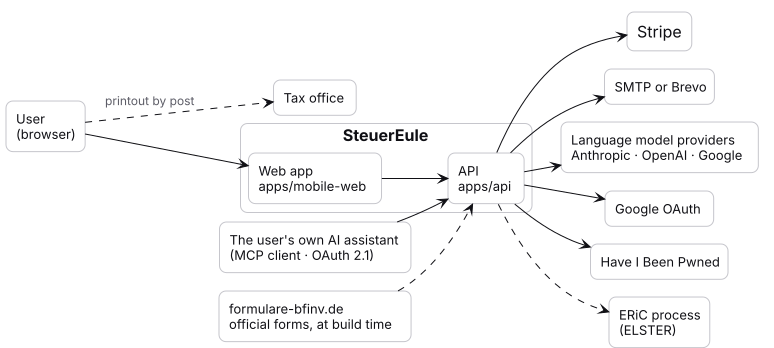

(source: context.puml)
| Neighbour | Purpose | Adapter in the code | What the API sends there |
|---|---|---|---|
| Stripe | payment for the printout, webhook | unlock/stripe-payment-provider.ts behind PaymentProvider |
user id, tax year, price id |
| SMTP, Brevo | confirmation and security mail | auth/smtp-email-sender.ts, auth/brevo-email-sender.ts behind EmailSender; without configuration a logging stand-in |
e-mail address, mail text |
| Language model providers | the owl's chat, reading aid for receipts, topic guard | llm/chat-model.factory.ts (LangChain) |
chat history and case data; receipt text after names, addresses and identifiers have been removed. Personal data only with consent (ADR-0091). |
| Google OAuth | sign-in with a Google account | auth/better-auth.ts |
OAuth protocol data |
| Have I Been Pwned | checks new passwords against known breaches | better-auth plugin, auth/breach-check.ts |
part of the password hash (k-anonymity), never the password |
| MCP clients | the user's assistant reads the return and fills drafts | mcp/ as a driving adapter (ADR-0052) |
only what the user released through an OAuth scope |
| formulare-bfinv.de | source of the official forms | scripts/vordrucke/download-vordrucke.mjs, not at runtime |
nothing |
| ERiC | electronic transmission for the self-employed | business/elster-transmission.ts |
the transmission data; see §11 |